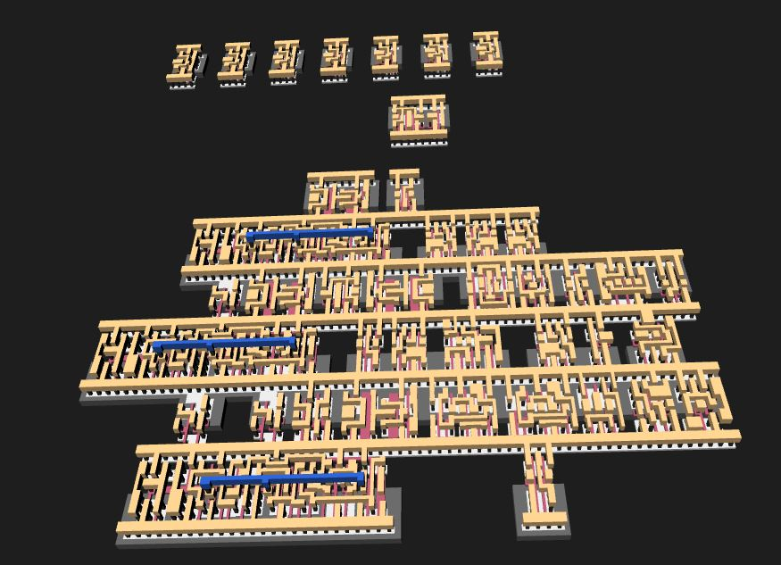
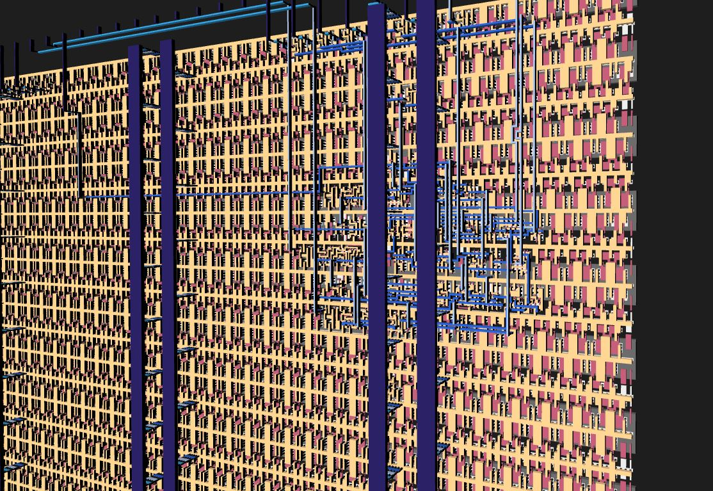
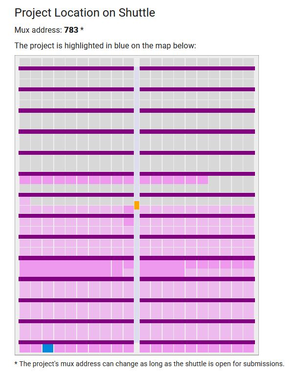

This project is a submission to the Tiny Tapeout program. Tiny Tapeout is an open and accessible tapeout platform for ASIC designs. It allows easy tapeout of chips using open source tools and PDKs. This project was submitted to the IHP25b shuttle, which is based on the open source IHP SG13G2 PDK, a BiCMOS process at 130 nm.
The project submitted is a 3-bit up/down counter, designed and verified in Verilog. The synthesis is performed with Yosys, and the floorplaning and placement with OpenLane. The resulting GDS is visualized with the GDS Viewer on the Tiny Tapeout website.
 The location of the chip on the shuttle can be seen below.
The shuttle will close in September 2025, and the fabricated chips will be delivered in April 2026. After this, the chips will be tested.
The GitHub repository can be seen below.